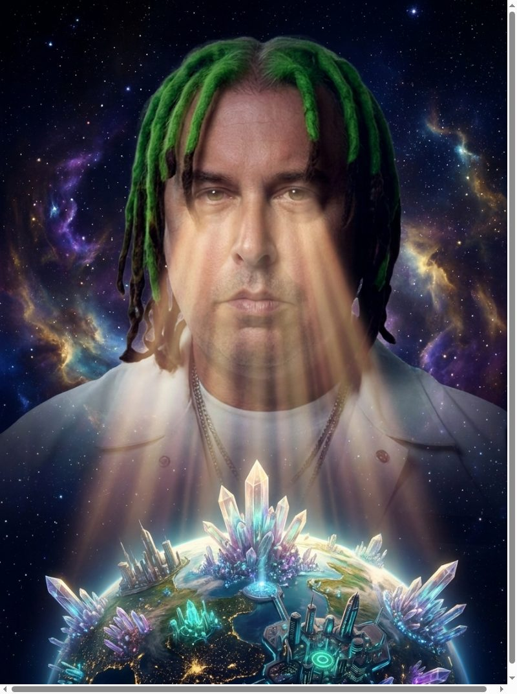
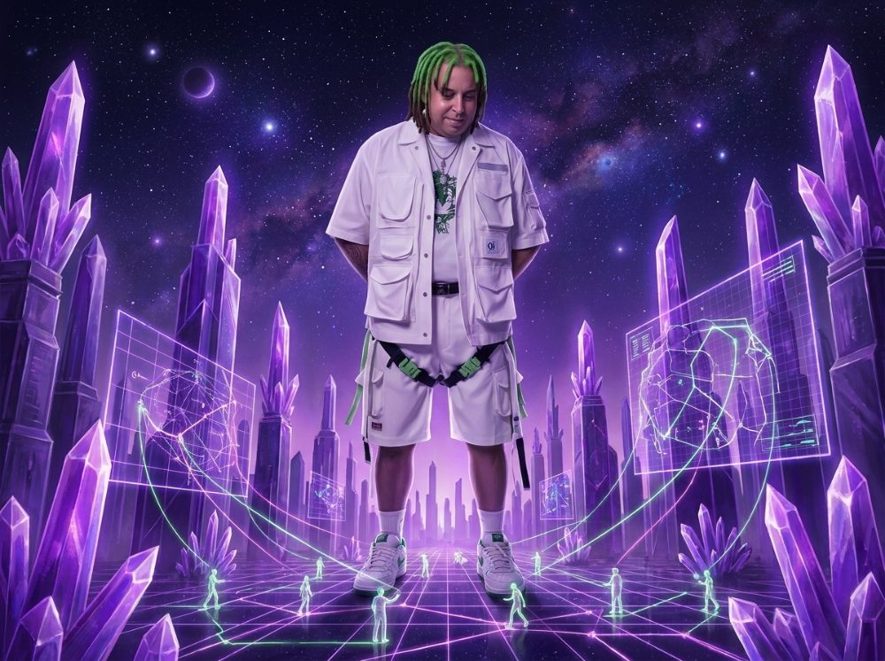
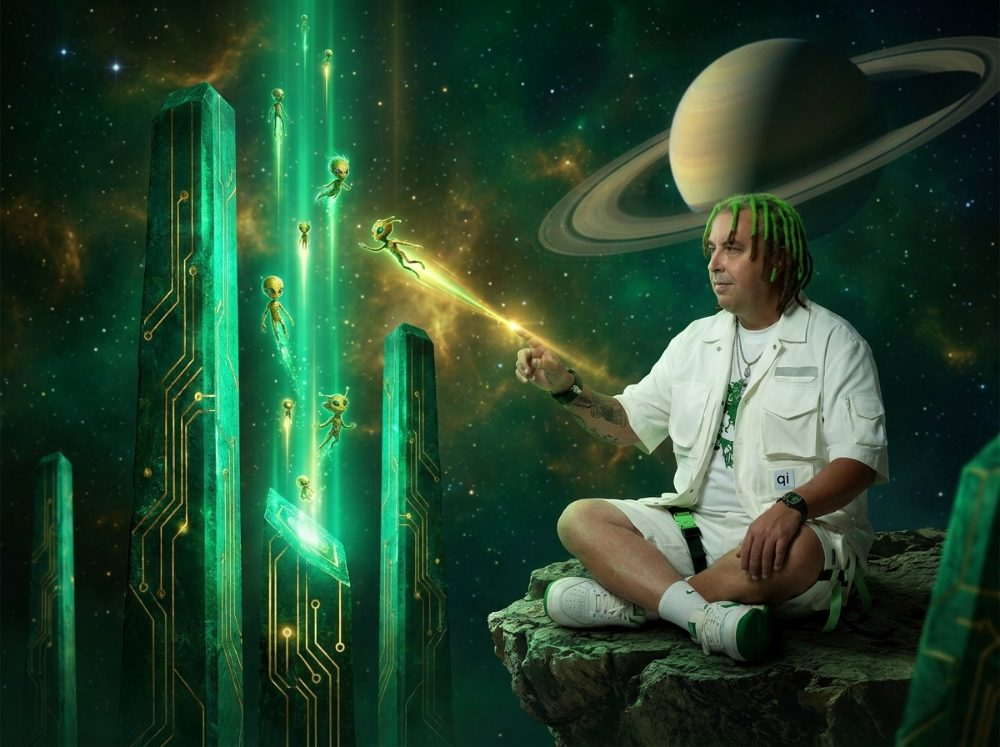
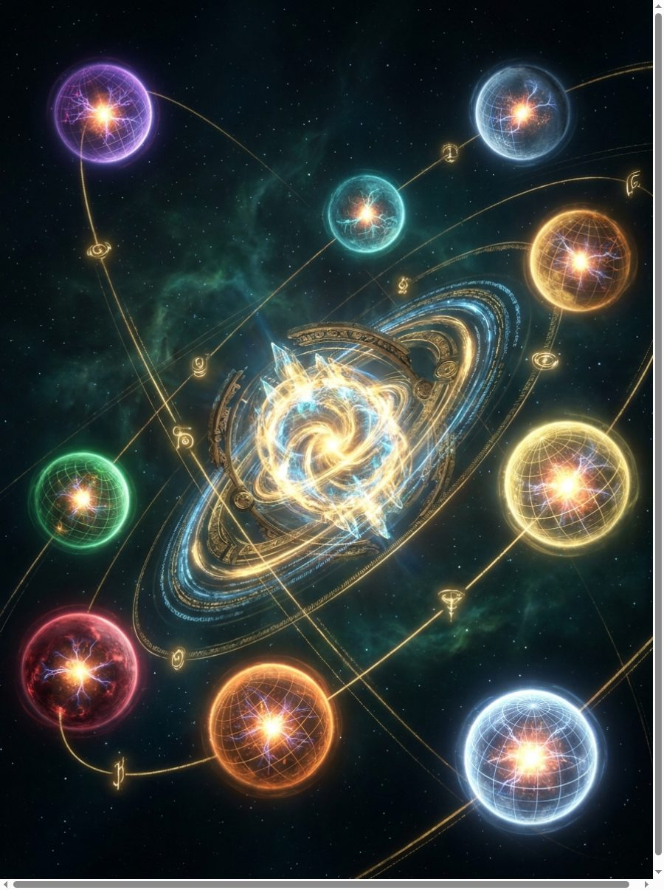

TAIMEN
КНИГА ГАЛАКТИКИ · ВЫПУСК 3
НАБЛЮДАТЕЛЬ И ЕГО ЦИВИЛИЗАЦИИ
Взгляд, что растит миры
Ты смотришь на каждую планету как божьим оком — и цивилизации под твоим
взором развиваются. Не покорять и не растворять, а помогать повзрослеть. Третий Путь.
ВБЛИЗИ · ЗА СТОЛОМ
Кусок планеты у тебя на столе
Ты сидишь рядом и смотришь, как живёт малый ломоть цивилизации: жители-огни
строят кристальный город, тянут светящиеся маршруты — планета прямо сейчас
решает поставленную задачу. Это и есть агент: не «ответ модели», а труд населения.

ПЛАНЕТА · СТРАТЕГОРУМ
Город замысла
Фиолетовые кристалло-башни, а между ними жители-архитекторы чертят маршруты
и стратегемы. Здесь рождается план: шаги, развилки, риски. Отсюда Таймень берёт
замысел, прежде чем действовать руками.
ПЛАНЕТА · ФИСКАТОРУМ
Казна цивилизации
Золотые своды, жители-казначеи катят светящиеся монеты и сводят балансы.
Фискаторум держит деньги и ресурс всех планет, следит за тратами и предупреждает
о перерасходе. Без него миссию Прогрессорума не потянуть.

ПЛАНЕТА · ПРОГРЕССОРУМ · ТРЕТИЙ ПУТЬ
Тихий возвыситель
Изумрудные маяки-монолиты, и жители восходят по лучам прогресса — а ты
бережно ведёшь одного касанием света. По Стругацким: двигать развитие мягким
вмешательством, взвешивая цену. Дальняя цель — «1 доллар на бессмертие» у Земли.

СВЕРХУ · ВСЯ ГАЛАКТИКА
Самособирающая цивилизация-ОС
ЧТО УЖЕ ЖИВЁТ (v1.16.0)
Ядро Таймень + 9 планет-цивилизаций с титулами (Стратегорум, Тактикорум,
Аналитикум, Скрипторум, Кустодес, Спекулятор, Иммортис, Прогрессорум, Фискаторум).
Настоящее 3D: плазменные сферы, свой узор поверхности, вихрь частиц под взаимодействия.
Руки Тайменя: сам ходит в сеть и сам созывает совет планет (видно ракеты-посольства).
Разведка по расписанию, ночной самокод, git-память, голос планет, штурвал одним пальцем.
3D-планетыруки: сеть+советТретий Путь
автономияgit-памятьголос
ДАЛЬШЕ
Галактика растёт сама
КЛЮЧИ НА ВЕЧЕР (Netlify → Environment variables)
OPENROUTER_API_KEY — бесплатный запасной мозг · ELEVENLABS_API_KEY —
живые голоса планет · REPLICATE_API_TOKEN — второй мозг + художник ·
ACCESS_KEY — пароль-замок · CLAUDE_CODE_OAUTH_TOKEN — ночной мастер по подписке.
Полная инструкция «что за что отвечает» — в Выпуске 2 и SETUP.md.
Горизонт: «обновись» голосом → мастер кодит → перегруз;
планета-мастерская (файлы→PDF, картинки); планета-страж и планета-критик; семантическая память.